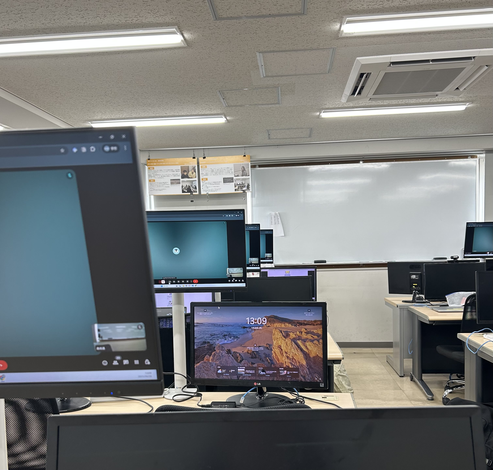
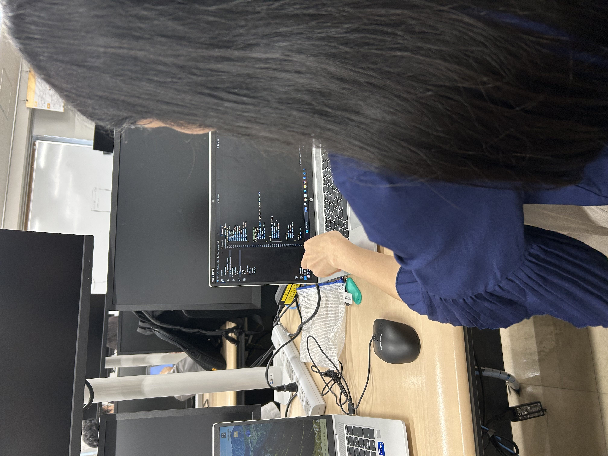

未来につながる、やさしい心がけ

このページでは、専門学校で身につけられる、未来につながる, やさしい心掛けについてご紹介します。
日本での就職や社会生活に役立つマナーやルールを知ることは、とても大切です。
日本語学校と専門学校のルールやマナーにはいくつか違いがあります。
例えば、一番大きな違いのひとつは「出席率」の高さです。
専門学校では授業への出席がとても重要で、
これは将来の仕事でも求められる大切な習慣です。
でも、安心してください。これは決して厳しいルールというわけではなく、
社会に出る準備として、自然と身につけていけるものです。
授業の中で、少しずつ学んでいくことができます。
また、専門学校には、毎日を気持ちよく過ごすための やさしいマナーがあります。たとえば：
- 時間を守って登校すること
- 授業の前後に先生におじぎをすること
- 「おはようございます」「こんにちは」など、
あいさつを大切にすること - 先生の話をしっかり聞くこと
- 必ずパソコンやノートを持ってくること
- 授業中にスマホを使わないこと
- 授業中に食べないこと
- 使った物は元の場所に戻して、
教室をきれいに使うこと

どれも難しいことではなく、「周りの人への思いやり」から生まれる行動です。
ヨーロッパをはじめ、海外から来た留学生の皆さんも、
「失礼にならないようにしなきゃ」と不安にならなくて大丈夫です。
わからないことがあれば、先生や先輩がやさしく教えてくれます。
専門学校の生活を通じて、無理なく社会で必要な力を身につけることができます。
やさしい心掛けを少しずつ積み重ねていくことで、皆さんの未来がより明るく、 豊かなものになるはずです。
